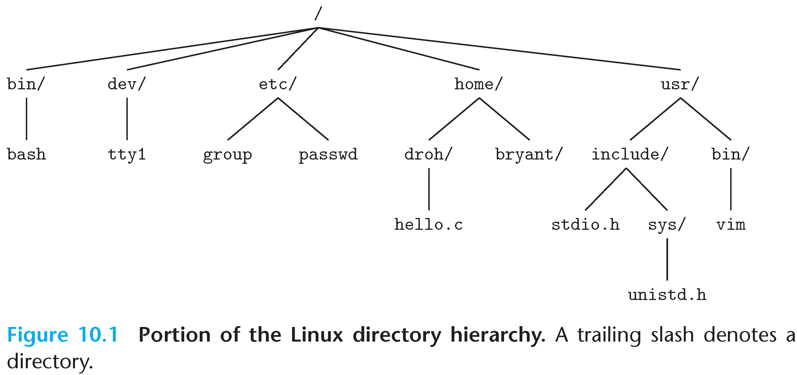

Assembly (also known as Assembly language, ASM): A low-level programming language where the program instructions match a particular architecture's operations.
Architecture: (also ISA: instruction set architecture) The parts of a processor design that one needs to understand for writing assembly/machine code.
Properties:
Splits a program into many small instructions that each do one single part of the process.
Each architecture will have a different set of operations that it supports (although there are similarities).
Assembly is not portable to other architectures.
Complex/Reduced Instruction Set Computing
Early trend - add more and more instructions to do elaborate operations
Complex Instruction Set Computing (CISC)
Difficult to learn and comprehend language
Less work for the compiler
Complicated hardware runs more slowly
Opposite philosophy later began to dominate
Reduced Instruction Set Computing (RISC)
Simple (and smaller) instruction set makes it easier to build fast hardware.
Let software do the complicated operations by composing simpler ones.
6.2 Registers
Assembly uses registers to store values. Registers are:
Small memories of a fixed size.
Can be read or written.
Limited in number.
Very fast and low power to access.
Registers
Memory
Speed
Fast
Slow
Size
Small
e.g., 32 registers * 32 bit = 128 bytes
Big
4-32 GB
Connection
More variables than registers?
Keep most frequently used in registers and move the rest to memory
x86-84 Registers
%rax %eax
%r8 %r8d
%rbx %ebx
%r9 %r9d
%rcx %ecx
%r10 %r10d
%rdx %edx
%r11 %r11d
%rsi %esi
%r12 %r12d
%rdi %edi
%r13 %r13d
%rsp %esp
%r14 %r14d
%rbp %ebp
%r15 %r15d
6.3 x86-64 Instructions
In high-level languages, variable types determine operation.
In assembly, operation determines type, i.e., how register contents are treated.
Operations
Transfer data between memory and register
Load data from memory into register
Store register data into memory
Perform arithmetic function on register or memory data
Transfer control
Unconditional jumps to/from procedures
Conditional branches
Indirect branches
6.3.1 Moving Data Instructions
movq source, dest
Operand Types
Immediate: Constant integer data. Like C constants, but prefix with '$'.
Memory:: 8 consecutive bytes of memory at address given by register (for movq).
This is corresponding to movq. The mov instruction without a suffix is size-dependent. mov defaults to 32-bit operations when the size isn't explicitly indicated.
Recommend to use the explicit suffixes (movq, movl, movw, movb) whenever possible
Memory Addressing Mode
Normal (R) => pointer dereferencing in C
movq (%rcx),%rax equals:
rax = *rcx
Displacement D(R) => accessing data at a fixed offset from a base address
movq 8(%rbp), %rdx equals:
rdx = *(((char*)rbp) + 8)
Complete Mode: D(Rb,Ri,S)
D: Constant "displacement" 1, 2, or 4 bytes
Rb: Base register: Any of 16 integer registers
Ri: Index register: Any, except for %rsp
S: Scale: 1, 2, 4, or 8
Example:movl (%rbx,%rdi,4), %eax
Calculate the address: %rbx + (4 * %rdi) (e.g., base address + 4 * 5 = base address + 20).
Access the 32-bit value at that calculated address.
Move the retrieved value into the %eax register.
6.3.2 Address Computation Instructions
leaq src, dst
leaq (%rdi,%rdi,2), %rax ; # Calculate the address of the element at index rdx in an array of integers pointed to by rsi (assuming 4 bytes per integer)
long arith(long x, long y, long z) {
long t1 = x + y;
long t2 = z + t1;
long t3 = x + 4;
long t4 = y * 48;
long t5 = t3 + t4;
long rval = t2 * t5;
return rval;
}
0000000000001149 <arith>:
1149: f3 0f 1e fa endbr64
114d: 55 push %rbp
114e: 48 89 e5 mov %rsp,%rbp
1151: 48 89 7d c8 mov %rdi,-0x38(%rbp) # Store x on the stack
1155: 48 89 75 c0 mov %rsi,-0x40(%rbp) # Store y on the stack
1159: 48 89 55 b8 mov %rdx,-0x48(%rbp) # Store z on the stack
115d: 48 8b 55 c8 mov -0x38(%rbp),%rdx # Load x into rdx
1161: 48 8b 45 c0 mov -0x40(%rbp),%rax # Load y into rax
1165: 48 01 d0 add %rdx,%rax # t1 = x + y
1168: 48 89 45 d0 mov %rax,-0x30(%rbp) # Store t1 on the stack
116c: 48 8b 55 b8 mov -0x48(%rbp),%rdx # Load z into rdx
1170: 48 8b 45 d0 mov -0x30(%rbp),%rax # Load t1 into rax
1174: 48 01 d0 add %rdx,%rax # t2 = z + t1
1177: 48 89 45 d8 mov %rax,-0x28(%rbp) # Store t2 on the stack
117b: 48 8b 45 c8 mov -0x38(%rbp),%rax # Load x into rax
117f: 48 83 c0 04 add $0x4,%rax # t3 = x + 4
1183: 48 89 45 e0 mov %rax,-0x20(%rbp) # Store t3 on the stack
1187: 48 8b 55 c0 mov -0x40(%rbp),%rdx # Load y into rdx
118b: 48 89 d0 mov %rdx,%rax # Copy y into rax (for multiplication)
118e: 48 01 c0 add %rax,%rax # Multiply y by 2 (left shift)
1191: 48 01 d0 add %rdx,%rax # Add y (original value) so now its 3y
1194: 48 c1 e0 04 shl $0x4,%rax # Multiply by 16 (left shift 4) 3y*16 = 48y
1198: 48 89 45 e8 mov %rax,-0x18(%rbp) # Store t4 = 48 * y on the stack
119c: 48 8b 55 e0 mov -0x20(%rbp),%rdx # Load t3 into rdx
11a0: 48 8b 45 e8 mov -0x18(%rbp),%rax # Load t4 into rax
11a4: 48 01 d0 add %rdx,%rax # t5 = t3 + t4
11a7: 48 89 45 f0 mov %rax,-0x10(%rbp) # Store t5 on the stack
11ab: 48 8b 45 d8 mov -0x28(%rbp),%rax # Load t2 into rax
11af: 48 0f af 45 f0 imul -0x10(%rbp),%rax # rval = t2 * t5
11b4: 48 89 45 f8 mov %rax,-0x8(%rbp) # Store rval on the stack
11b8: 48 8b 45 f8 mov -0x8(%rbp),%rax # Move rval into rax (return value)
11bc: 5d pop %rbp # Restore the caller's base pointer
11bd: c3 ret # Return from the function
6.4 C, Assembly & Machine Code
Compile with the following code (debugging-friendly):
$ gcc –Og p1.c -o p
Use the following command to generate the assembly code:
$ gcc –Og –S p1.c
Use the following command to disassembly the machine code:
$ objdump –d p1
7 Control Flow Instructions
7.1 Conditional Codes
Processor State (Partial)
Temporary Data: %rax, ...
Location of runtime stack: %rsp, ...
Location of current code control point: %rip, ...
Status of recent tests: CF, ZF, SF, OF, ... => Conditional Codes!
Conditional Codes
Single bit registers, GDB prints these as one "rflags" register or "eflags"(more commonly used, lower 32 bits).
Implicitly set (as side effect) of arithmetic operations.
CF (Carry Flag): Overflowing or underflowing in an unsigned range.
ZF (Zero Flag): The result of an operation is zero
SF (Sign Flag): The result of an operation, interpreted as a signed two's complement number, is negative (MSB is 1).
OF (Overflow FLag): Overflow in signed two's complement.
Instructions
cmp a, b
Computes , set conditional codes based on result, but does not change b!
Used for if (a < b)
test a, b
Computes , set conditional codes based on the result, but does not change b!
Most common use:test %rx, %rx to compare %rx to zero
Second most common use:test %rX, %rY to test if any of the 1-bits in %rY are also 1 in %rX.
7.2 Conditional Branches
Jumping
jX
Condition
Description
jmp
1
Unconditional
je
ZF
Equal/Zero
jne
~ZF
Not Equal/Not Zero
js
SF
Negative
jns
~SF
Non-Negative
jq
~(SF^OF)&~ZF
Greater (Signed)
jqe
~(SF^OF)
Greater or Equal (Signed)
jl
(SF^OF)
Less (Signed)
jle
(SF^OF)|ZF
Less or Equal (Signed)
ja
~CF&~ZF
Above (unsigned)
jb
CF
Below (unsigned)
SetX Instructions: Set low-order byte of destination to 0 or 1 based on combinations of condition codes. Does not alter remaining 7 bytes!
SetX
Condition
Description
sete
ZF
Equal/Zero
setne
~ZF
Not Equal/Not Zero
sets
SF
Negative
setns
~SF
Non-Negative
setg
~(SF^OF)&~ZF
Greater (Signed)
setge
~(SF^OF)
Greater or Equal (Signed)
setl
(SF^OF)
Less (Signed)
setle
(SF^OF)|ZF
Less or Equal (Signed)
seta
~CF&~ZF
Above (unsigned)
setb
CF
Below (unsigned)
Normal version vs. goto version
#include <stdio.h>
int main() {
int x = 5;
if (x > 3) {
printf("x is greater than 3\n");
} else {
printf("x is less than or equal to 3\n");
}
return 0;
}
#include <stdio.h>
int main() {
int x = 5;
if (x > 3) {
goto greater_than_three;
} else {
goto less_than_or_equal_to_three;
}
greater_than_three:
printf("x is greater than 3\n");
goto end; // Jump to the end to avoid the other block
less_than_or_equal_to_three:
printf("x is less than or equal to 3\n");
end:
return 0;
}
Example
0000000000000000 <main>:
#include <stdio.h>
int main() {
0: f3 0f 1e fa endbr64
4: 55 push %rbp
5: 48 89 e5 mov %rsp,%rbp
8: 48 83 ec 10 sub $0x10,%rsp
int y = 15;
c: c7 45 fc 0f 00 00 00 movl $0xf,-0x4(%rbp)
if (y < 10) {
13: 83 7d fc 09 cmpl $0x9,-0x4(%rbp)
17: 7f 05 jg 1e <main+0x1e>
y = y * 2;
19: d1 65 fc shll $1,-0x4(%rbp)
1c: eb 04 jmp 22 <main+0x22>
} else {
y = y + 1;
1e: 83 45 fc 01 addl $0x1,-0x4(%rbp)
}
printf("y = %d\n", y);
22: 8b 45 fc mov -0x4(%rbp),%eax
25: 89 c6 mov %eax,%esi
27: 48 8d 05 00 00 00 00 lea 0x0(%rip),%rax # 2e <main+0x2e>
2e: 48 89 c7 mov %rax,%rdi
31: b8 00 00 00 00 mov $0x0,%eax
36: e8 00 00 00 00 call 3b <main+0x3b>
return 0;
3b: b8 00 00 00 00 mov $0x0,%eax
40: c9 leave
41: c3 ret
7.3 Loops
Example
0000000000000000 <main>:
#include <stdio.h>
int main() {
0: f3 0f 1e fa endbr64
4: 55 push %rbp
5: 48 89 e5 mov %rsp,%rbp
8: 48 83 ec 10 sub $0x10,%rsp
int i;
for (i = 0; i < 5; i++) {
c: c7 45 fc 00 00 00 00 movl $0x0,-0x4(%rbp)
13: eb 1d jmp 32 <main+0x32>
printf("Iteration: %d\n", i);
15: 8b 45 fc mov -0x4(%rbp),%eax
18: 89 c6 mov %eax,%esi
1a: 48 8d 05 00 00 00 00 lea 0x0(%rip),%rax # 21 <main+0x21>
21: 48 89 c7 mov %rax,%rdi
24: b8 00 00 00 00 mov $0x0,%eax
29: e8 00 00 00 00 call 2e <main+0x2e>
for (i = 0; i < 5; i++) {
2e: 83 45 fc 01 addl $0x1,-0x4(%rbp)
32: 83 7d fc 04 cmpl $0x4,-0x4(%rbp)
36: 7e dd jle 15 <main+0x15>
}
return 0;
38: b8 00 00 00 00 mov $0x0,%eax
3d: c9 leave
3e: c3 ret
Behavior that may be obvious to programmers can be obfuscated by languages and code styles.
When in doubt, the compiler must be conservative.
...
8.1 Generally Useful Optimizations
Reduce frequency with which computation performed
void set_row(double *a, double *b, long i, long n) {
long j;
for (j = 0; j < n; j++) {
a[i * n + j] = b[j];
}
}
void set_row(double *a, double *b, long i, long n) {
long j;
int ni = n + i;
for (j = 0; j < n; j++) {
a[ni + j] = b[j];
}
}
Reduction in Strength: Shift, add instead of multiply or divide
for (int i = 0; i < n; i++) {
int ni = n * i;
for (int j = 0; j < n; j++)
a[ni + j] = b[j];
}
int ni = 0;
for (int i = 0; i < n; i++) {
for (int j = 0; j < n; j++)
a[ni + j] = b[j];
ni += n;
}
Share Common Subexpressions
/* Sum neighbors of i, j */
up = val[(i - 1) * n + j];
down = val[(i + 1) * n + j];
left = val[i * n + j - 1];
down = val[i * n + j + 1];
sum = up + down + left + right;
// 3 multiplications
long inj = i * n + j;
up = val[inj - n];
down = val[inj + n];
left = val[inj - 1];
down = val[inj + 1];
sum = up + down + left + right;
// 1 multiplication
Remove unnecessary procedure calls
8.2 Optimization Blockers
Procedure Calls
/* Convert string to lower case with quadratic performance*/
void lower(char* s) {
size_t i;
for (i = 0; i < strlen(s); i++) {
if (s[i] >= 'A' && s[i] <= 'Z')
s[i] += 'a' - 'A';
}
}
/* Optimized code */
void lower(char* s) {
size_t i;
size_t len = strlen(s);
for (i = 0; i < len; i++) {
if (s[i] >= 'A' && s[i] <= 'Z')
s[i] += 'a' - 'A';
}
}
strlen() takes linear time to scan the string until it reaches the null character.
Why couldn't compiler move strlen() out of inner loop?
Procedure may have side effects.
Function may not return the same value for a given argument.
Compiler treats procedure call as a black box => weak optimizaion!
You can use GCC with inline functions and optimization O1, but better do yur own code motion.
Memory Alias
void sum_rows1(double *a, double *b, long n) {
long i, j;
for (i = 0; i < n; i++) {
b[i] = 0;
for (j = 0; j < n; j++) {
b[i] += a[i * n + j];
}
}
}
int main() {
double A[9] =
{0, 1, 2,
4, 8, 16,
32, 64, 128};
double B[3] = A + 3;
sum_rows1(A, B, 3);
return 0;
}
Memory and registers have to pass values over and over again!
The optimizer cannot optimize because the code may updates a[i] on every iteration!
8.3 Exploit Instruction-Level Parallelism
CPE (Cycle Per Element)
Convenient way to express performance of program that operates on vectors or lists.
Symbol definitions are stored in object file (by assembler) in symbol table. During symbol resolution step, the linker associates each symbol reference with exactly one symbol definition.
Relocation
Merges separate code and data sections into single sections.
Relocates symbols from their relative locations in the .o files to their final absolute memory locations in the executable.
Updates all references to these symbols to reflect their new positions.
Three types of object files
Relocatable object file (.o file): Contains code and data in a form that can be combined with other relocatable object files to form executable object file.
Executable object file (a.out file) Contains code and data in a form that can be copied directly into memory and then executed.
Shared object file (.so file): Special type of relocatable object file that can be loaded into memory and linked dynamically, at either load time or run-time.
10.2 ELF Object Files
Executable and Linkable Format (ELF): One unified format for relocatable object files, executable object files & shared object files
Elf header: Word size, byte ordering, file type (.o, exec, .so), machine type, etc.
Segment header table (only for executable object file): Page size, virtual address memory segments (sections), segment sizes (indicate where different segments of the code go, like stack, shared library, etc.).
.data section: Initialized global and static variables. Local C variables are maintained at run time on the stack and do not appear in either the .data or .bss sections.
.bss section (Block Started by Symbol): (Preciesly in modern gcc) Uninitialized and static variables, along with any global or static variables that are initialized to zero, has section header but occupies no space.
.symtab section: Symbol table for functions and global variables' names, section names and locations.
.rel.text section: Relocation info for .text section, addresses of instructions that will need to be modified in the executable.
.rel.data section: Relocation info for .data section, addresses of pointer data that will need to be modified in the merged executable.
.debug section: Info for symbolic debugging (gcc -g).
Section header table: Offsets and sizes of each section.
Linker Symbols
Global symbols: Symbols defined by module m that can be referenced by other modules. These correspond to nonstatic C functions and global variables.
External symbols: Global symbols that are referenced by module m but defined by some other module. These correspond to nonstatic C functions and global variables that are defined in other modules.
Local symbols: Symbols that are defined and referenced exclusively by module m. These correspond to static C functions and global variables that are defined with the static attribute.
Example (symbols.c)
int incr = 1;
static int foo(int a) {
int b = a + incr;
return b;
}
int main(int argc, char* argv[]) {
printf("%d\n", foo(5));
return 0;
}
incr, foo, main, printf will be on the symbol table of symbols.o.
Types of Duplicate Symbol Definitions
strong: procedures and initialized globals.
weak: uninitialized globals, or ones declared with specifier extern.
Linker's Symbol Rules
Multiple strong symbols are not allowed. Each item can be defined only once, otherwise will cause linker error.
Given a strong symbol and multiple weak symbols, choose the strong symbol.
If there are multiple weak symbols, pick an arbitrary one (can override this with gcc –fno-common).
Three types of symbols that do not have entries in the section header table
ABS: Symbols that should not be relocated
UNDEF: Symbols that are referenced in this object module but defined elsewhere.
COMMON: Uninitialized data objects that are not yet allocated (Precisely, uninitialized global variables).
11 Exceptional Control Flow
From startup to shutdown, each CPU core simply reads and executes (interprets) a sequence of instructions, one at a time (externally), but it is not sufficient to react to changes in system state, which are Exceptional Control Flow (ECF).
Exceptional Control Flow exists at all levels of a computer system
Low Level Mechanisms
Exceptions: Change in control flow in response to a system event (i.e., change in system state), implemented using combination of hardware and OS software.
High Level Mechanisms
Process context switch: Implemented by OS software and hardware timer.
Signals: Implemented by OS software.
Nonlocal jumps: Implemented by C runtime library.
11.1 Exceptions
An exception is a transfer of control to the OS kernel in response to some event (i.e., change in processor state).
Kernel is the memory-resident part of the OS.
Examples of events: Divide by 0, arithmetic overflow, page fault, I/O request completes, typing Ctrl-C
Exception Handling
Each type of event has a unique exception number .
= index into exception table (a.k.a. interrupt vector).
Handler is called each time exception occurs.
Classes of Exceptions
Asynchronous Exceptions: Caused by events external to the processor.
Interrupts:
Indicated by setting the processor’s interrupt pin.
Handler returns to "next" instruction.
Examples
Timer interrupt: Every few ms, an external timer chip triggers an interrupt, used by the kernel to take back control from user programs (avoiding infinite loops, etc.).
I/O interrupt from external device: Hitting Ctrl-C at the keyboard, arrival of a packet from a network, arrival of data from a disk.
Synchronous Exceptions: Caused by events that occur as a result of executing an instruction.
Traps
Intentional, set program up to "trip the trap" and do something.
Examples: system calls, gdb breakpoints.
Returns control to "next" instruction.
Faults
Unintentional but possibly recoverable.
Examples: page faults (recoverable), protection faults (unrecoverable), floating point exceptions.
Either re-executes faulting ("current") instruction or aborts.
Process: An instance of a running program. It is identified by Process ID (PID), user account, command name.
Two key abtractions:
Private address space: Each program seems to have exclusive use of main memory. This is provided by kernel mechanism called virtual memory.
Logical control flow: Each program seems to have exclusive use of the CPU. This is provided by kernel mechanism called context switching.
From startup to shutdown, each CPU core simply reads and executesa sequence of machine instructions, one at a time*. This sequence is the CPU’s control flow (or flow of control).
11.2.1 Context Switch
Processes are managed by a shared chunk of memory-resident OS code called the kernel. The kernel is not a separate process, but rather runs as part of some existing process.
Control flow passes from one process to another via a context switch.
Context Switching (Uniprocessor)
Single processor executes multiple processes concurrently.
Process executions interleaved (multitasking).
Address spaces managed by virtual memory system.
Context Switching (Uniprocessor)
Save current registers in memory
Schedule next process for execution
Load saved registers and switch address space (context switch)
Context Switching (Multicore)
Multiple CPUs on single chip.
Share main memory (and some caches).
Each can execute a separate process. Scheduling of processes onto cores done by kernel.
11.2.2 Concurrent Flows
Concurrent Flow: A logical flow whose execution overlaps in time with another flow.
Parallel Flows: Two flows are running concurrently on different processor cores or computers.
11.2.3 System Calls
On error, most system-level functions return −1 and set global variable errno to indicate cause.
Can simplify somewhat using an error-reporting function:
void unix_error(char *msg) /* Unix-style error */
{
fprintf(stderr, "%s: %s\n", msg, strerror(errno));
exit(1);
}
/* Example of using unix_error */
if ((pid = fork()) < 0)
unix_error("fork error");
Simplify even further by using Stevens-style error-handling wrappers:
pid_t Fork(void)
{
pid_t pid;
if ((pid = fork()) < 0)
unix_error("Fork error");
return pid;
}
/* Example of using Fork */
pid = Fork();
11.2.4 Process Control
Obtaining Process IDs
pid_t getpid(void) Returns PID of current process.
pid_t getppid(void) Returns PID of parent process.
Process States
Running: Process is either executing instructions, or it could be executing instructions if there were enough CPU cores.
Blocked/Sleeping: Process cannot execute any more instructions until some external event happens (usually I/O).
Stopped: Process has been prevented from executing by user action (control-Z).
Terminated/Zombie: Process is finished. Parent process has not yet been notified.
Terminating Processes
Receiving a signal whose default action is to terminate.
Returning from the main routine.
Calling the exit function.
void exit(int status): Terminates with an exit status of status. Convention is that normal return status is 0, nonzero on error. Another way to explicitly set the exit status is to return an integer value from the main routine.
Creating Processes: Parent process creates a new running child process by calling int fork(void)
Returns 0 to the child process, and child's PID to parent process.
Child is almost identical to parent:
Child get an identical (but separate) copy of the parent's virtual address space.
Child gets identical copies of the parent's open file descriptors.
Concurrent execution: Can't predict execution order of parent and child.
Duplicate but separate address space: x has a value of 1 when fork returns in parent and child, and subsequent changes to x are independent.
Shared open files: stdout is the same in both parent and child.
Process Graphs: Topological sort of the graph corresponds to a feasible total ordering.
Reaping Child Processes: When process terminates, it still consumes system resources.
Reaping Child Processes
Performed by parent on terminated child (using wait or waitpid).
Parent is given exit status information.
Kernel then deletes zombie child process.
If parent doesn't reap...
The orphaned child should be reaped by init process (pid == 1).
Unless it was init that terminated! Then need to reboot...
Only need explicit reaping in long-running processes, e.g., shells and servers.
wait Synchronizing with Children
Parent reaps a child with one of these system calls:
pid_t wait(int *status) Suspends current process until one of its children terminates, returns PID of child, records exit status in status.
pid_t waitpid(pid_t pid, int *status, int options) More flexible version of wait, can wait for a specific child or group of children, can be told to return immediately if there are no children to reap.
wait Example1
void fork9() {
int child_status;
if (fork() == 0) {
printf("HC: hello from child\n");
exit(0);
} else {
printf("HP: hello from parent\n");
wait(&child_status);
printf("CT: child has terminated\n");
}
printf("Bye\n");
}
Feasible Outputs: HC HP CT Bye or HP HC CT Bye
wait Status Codes
Return value of wait is the pid of the child process that terminated.
If status != NULL, then the integer it points to will be set to a value that indicates the exit status.
More information than the value passed to exit.
Must be decoded, using macros defined in sys/wait.h: WIFEXITED, WEXITSTATUS, WIFSIGNALED, WTERMSIG, WIFSTOPPED, WSTOPSIG, WIFCONTINUED...
wait Example2
If multiple children completed, will take in arbitrary order.
Can use macros WIFEXITED and WEXITSTATUS to get information about exit status.
void fork10() {
pid_t pid[N];
inti, child_status;
for (i = 0; i < N; i++)
if ((pid[i] = fork()) == 0)
exit(100+i); /* Child */
for (i = 0; i < N; i++) { /* Parent */
pid_t wpid = wait(&child_status);
if (WIFEXITED(child_status))
printf("Child %d terminated with exit status %d\n",
wpid, WEXITSTATUS(child_status));
else
printf("Child %d terminate abnormally\n", wpid);
}
}
execve Loading and Running Programs
Loads and runs in the current process
int execve(char *filename, char *argv[], char *envp[])
Executable file filename: Can be object file or script file beginning with #!interpreter (e.g., #!/bin/bash)
... with argument list argv (By convention argv[0]==filename)
... and environment variable list envp: "name=value" strings (e.g., USER=droh) getenv, putenv, printenv
Overwrites code, data, and stack: Retains PID, open files and signal context.
Called once and never returns (except if there is an error)
Example: Execute "/bin/ls –lt /usr/include" in child process using current environment
if ((pid = Fork()) == 0) { /* Child runs program */
if (execve(myargv[0], myargv, environ) < 0) {
printf("%s: %s\n", myargv[0], strerror(errno)); exit(1);
}
}
execve and process memory layout
To load and run a new program a.out in the current process using execve:
Free vm_area_struct's and page tables for old areas.
Create vm_area_struct's and page tables for new areas.
Programs and initialized data backed by object files.
.bss and stack backed by anonymous files.
Set PC to entry point in .text
11.3 Shell
Simple Shell Implementation
int main(int argc, char** argv)
{
char cmdline[MAXLINE]; /* command line */
while (1) {
/* read */
printf("> ");
fgets(cmdline, MAXLINE, stdin);
if (feof(stdin))
exit(0);
/* evaluate */
eval(cmdline);
}
}
Simple Shell eval Function
void eval(char *cmdline)
{
char *argv[MAXARGS]; /* Argument list execve() */
char buf[MAXLINE]; /* Holds modified command line */
int bg; /* Should the job run in bg or fg? */
pid_tpid; /* Processid */
strcpy(buf, cmdline);
bg= parseline(buf, argv);
if (argv[0] == NULL)
return; /* Ignore empty lines */
if (!builtin_command(argv)) {
if ((pid = Fork()) == 0) { /* Child runs user job */
execve(argv[0], argv, environ);
// If we get here, execve failed.
printf("%s: %s\n", argv[0], strerror(errno));
exit(127);
}
/* Parent waits for foreground job to terminate */
if(!bg) {
intstatus;
if (waitpid(pid, &status, 0) < 0)
unix_error("waitfg: waitpid error");
}
else
printf("%d %s\n", pid, cmdline);
}
return;
}
Problems with Simple Shell Example
Shell designed to run indefinitely: should not accumulate unneeded resources.
Background jobs could run the entire computer out of memory, more likely, run out of PIDs.
11.4 Signals
Signals: A signal is a small message that notifies a process that an event of some type has occurred in the system.
Akin to exceptions and interrupts.
Sent from the kernel (sometimes at the request of another process) to a process.
Signal type is identified by small integer ID's (1-30)
Only information in a signal is its ID and the fact that it arrived.
ID
Name
Default Action
Corresponding Event
2
SIGINT
Terminate
User typed Ctrl-C
9
SIGKILL
Terminate
Kill program (cannot override or ignore)
11
SIGSEGV
Terminate
Segmentation violation
14
SIGALRM
Terminate
Timer Signal
17
SIGCHLD
Ignore
Child stopped or terminated
Terminology
Kernel sends a signal to a destination process by updating some state in the context of the destination process for following reasons:
Kernel has detected a system event such as divide-by-zero (SIGFPE) or the termination of a child process (SIGCHLD).
Another process has invoked the kill system call to explicitly request the kernel to send a signal to the destination process.
A destination process receives a signal when it is forced by the kernel to react in some way to the signal.
Some possible ways to react:
Ignore the signal (do nothing).
Terminate the process (with optional core dump).
Catch the signal by executing a user-level function called signal handler.
A signal is pending if sent but not yet received.
There can be at most one pending signal of each type.
A pending signal is received at most once.
Important: Signals are not queued.
Kernel sets bit k in pending when a signal of type k is sent.
Kernel clears bit k in pending when a signal of type k is received.
A process can block the receipt of certain signals.
Blocked signals can be sent, but will not be received until the signal is unblocked.
Some signals cannot be blocked (SIGKILL, SIGSTOP) or can only be blocked when sent by other processes (SIGSEGV, SIGILL, etc).
Can be set and cleared by using the sigprocmask function.
Also referred to as the signal mask.
11.4.1 Sending Signals
Sending Signals with /bin/kill Program:/bin/kill program sends arbitrary signal to a process or process group.
kill -9 1234 sends SIGKILL to process 1234.
kill -9 -1234 sends SIGKILL to to every process in process group 1234.
Sending Signals from the Keyboard: Typing Ctrl-C (Ctrl-Z) causes the kernel to send a SIGINT (SIGTSTP) to every job in the foreground process group.
SIGINT: default action is to terminate each process.
SIGTSTP: default action is to stop (suspend) each process.
Sending Signals with the kill Function
#include <sys/types.h>
#include <signal.h>
int kill(pid_t pid, int sig);
If pid is greater than zero, then the kill function sends signal number sig to process pid.
If pid is equal to zero, then kill sends signal sig to every process in the process group of the calling process, including the calling process itself.
If pid is less than zero, then kill sends signal sig to every process in process group |pid| (the absolute value of pid).
int main()
{
pid_t pid;
/* Child sleeps until SIGKILL signal received, then dies */
if ((pid = Fork()) == 0) {
Pause(); /* Wait for a signal to arrive */
printf("control should never reach here!\n");
exit(0);
}
/* Parent sends a SIGKILL signal to a child */
Kill(pid, SIGKILL);
exit(0);
}
11.4.2 Receiving Signals
Suppose kernel is returning from an exception handler and is ready to pass control to process p, Kernel computes pnb = pending & ~blocked, the set of pending nonblocked signals for process p.
If (pnb == 0), pass control to next instruction in the logical flow for p.
Else,
Choose least nonzero bit k in pnb and force process p to receive signal k.
The receipt of the signal triggers some action by p.
Repeat for all nonzero k in pnb.
Pass control to next instruction in logical flow for p.
Types of Default Actions
The process terminates.
The process stops until restarted by a SIGCONT signal.
The process ignores the signal.
Installing Signal Handlers: The signal (handler_t *signal(int signum, handler_t *handler)) function modifies the default action associated with the receipt of signal signum:
SIG_IGN: ignore signals of type signum.
SIG_DFL: revert to the default action on receipt of signals of type signum.
Otherwise, handler is the address of a user-level signal handler. When the handler executes its return statement, control passes back to instruction in the control flow of the process that was interrupted by receipt of the signal.
A signal handler is a separate logical flow (not process) that runs concurrently with the main program, but this flow exists only until returns to main program.
Another way of seeing this:
Nested Signal Handlers: Handlers can be interrupted by other handlers
11.4.3 Block & Unblocking Signals
Implicit blocking mechanism: Kernel blocks any pending signals of type currently being handled.
Explicit blocking and unblocking mechanism:sigprocmask function.
11.5 Writing Signal Handlers
Guidelines for Writing Safe Handlers
G0: Keep your handlers as simple as possible. e.g., set a global flag and return.
G1: Call only async-signal-safe functions in your handlers. printf, sprintf, malloc, and exit are not safe!
G2: Save and restore errno on entry and exit, so that other handlers don't overwrite your value of errno.
G3: Protect accesses to shared data structures by temporarily blocking all signals to prevent possible corruption.
G4: Declare global variables as volatile to prevent compiler from storing them in a register.
G5: Declare global flags as volatile sig_atomic_t. flag: variable that is only read or written (e.g. flag = 1, not flag++). Flag declared this way does not need to be protected like other globals.
Function is async-signal-safe if either reentrant (e.g., all variables stored on stack frame) or non-interruptible by signals.
Safe Formatted Output:
Correct Signal Handling: Must wait for all terminated child processes, can't use signals to count events, such as children terminating.
Synchronizing Flows to Avoid Races: Simple shell with a subtle synchronization error because it assumes parent runs before child.
Protable Signal Handling
Different systems have different signal-handling semantics. Use sigaction function (int sigaction(int signum, struct sigaction *act, struct sigaction *oldact);), which allows users to clearly specify the signal-handling semantics they want when they install a handler.
Explicitly Waiting for Signals: Handlers for program explicitly waiting for SIGCHLD to arrive.
Waiting for Signals with sigsuspend, equivalent to:
All I/O devices are represented as files, e.g. /dev/sda2 represents disk partition, /dev/tty2 represents terminal, /dev/null represents discard all writes/read empty file.
Kernel data structures are exposed as files.
Kernel offers a set of basic operations for all files.
open() and close(): Opening and closing files.
read() and write(): Reading and writing a file.
stat(), lstat() and fstat(): Look up information about a file (size, type, last modification time, ...).
lseek(): Changing the current file position (seek), indicates next offset into file to read or write.
File Types
Regular File: Contains arbitrary data.
Application programs often distinguish between text files (regular files that contain only ASCII or Unicode characters) and binary files (everything else). To the kernel there is no difference.
Text file is sequence of text lines, and text line is sequence of characters terminated (not separated!) by end of line indicator.
Directory: A file consisting of an array of links, where each link maps a filename to a file, which may be another directory.
Each directory contains at least two entries. .(dot) maps to the directory itself, and .. (dot-dot) is a link to the parent directory in the directory hierarchy.
All files are organized as a hierarchy anchored by root directory named /(slash).

Commands for manipulating directories:
mkdir: create empty directory.
ls: view directory contents.
rmdir: delete empty directory.
cd: change working directory.
pwd: print working directory.
Socket: For communicating with a process on another machine.
Named pipes (FIFOs), Symbolic links, Character and block devices...
Operations
Opening Files: Opening a file informs the kernel that you are getting ready to access that file, and returns a small identifying integer file descriptor.
Example
int fd; /* file descriptor */
if ((fd = open("/etc/hosts", O_RDONLY)) < 0) {
perror("open");
exit(1);
}
Closing Files: Closing a file informs the kernel that you are finished accessing that file.
Not to close a file more than once, and closing a file can fail => The OS is taking this opportunity to report a delayed error from a previous write operation, and you might silently lose data if you don't check!
Reading Files: Reading a file copies bytes from the current file position to memory, and then updates file position.
Example
char buf[512];
int fd; /* file descriptor */
int nbytes; /* number of bytes read */
/* Open file fd ... */
/* Then read up to 512 bytes from file fd */
if ((nbytes = read(fd, buf, sizeof(buf))) < 0) {
perror("read");
exit(1);
}
Returns number of bytes read from file fd into buf.
Return type ssize_t is signed integer.
nbytes < 0 indicates that an error occurred.
Short counts (nbytes < sizeof(buf)) are possible and are not errors!
13 Network Programming
13.1 Network Types & Structures
Every network application is based on the client-server model.
Network: A hierarchical system of boxes and wires organized by geographical proximity.
LAN (Local Area Network) spans a building or campus, e.g., Ethernet.
WAN (Wide Area Network) spans country or world, typically high-speed point-to-point (mostly optical) links.
Also SAN (Storage area network), MAN (Metropolitan), etc.
An internetwork (internet) is an interconnected set of networks, and the Global IP Internet (uppercase "I") is the most famous example of an internet (lowercase "i")
Bridged Ethernet Segment
Ethernet segment consists of a collection of hosts connected by wires (twisted pairs) to a hub.
Bridges learn which MAC addresses are on which segment by observing the source MAC addresses of frames that they receive. They then use this information to forward frames only to the necessary segment, rather than broadcasting to all segments.
internet
Multiple incompatible LANs can be physically connected by specialized computers called routers. The connected networks are called an internet (lower case).
internet Protocol
Protocol is a set of rules that governs how hosts and routers should cooperate when they transfer data from network to network, which smooths out the differences between the different networks.
Provides a naming scheme: An internet protocol defines a uniform format for host addresses, and each host (and router) is assigned at least one of these internet addresses that uniquely identifies it.
Provides a delivery mechanism: An internet protocol defines a standard transfer unit (packet), which consists of header (info such as packet size, source and destination addresses) and payload (data bits sent from source host).
13.2 Global IP Internet
Global IP Internet: Based on the TCP/IP protocol family.
IP (Internet Protocol): Provides basic naming scheme and unreliable delivery capability of packets (datagrams) from host-to-host.
UDP (User Datagram Protocol): Uses IP to provide unreliable datagram delivery from process-to-process.
TCP (Transmission Control Protocol): Uses IP to provide reliable byte streams from process-to-process over connections.
13.2.1 Locating Host
IP Addresses
Hosts are mapped to a set of 32-bit IP addresses, and they are stored in an IP address struct. They are always stored in memory in network byte order (big-endian byte order).
127.0.0.1 is always localhost.
IPv4 (Internet Protocol version 4) specifies 32-bit host addresses (192.0.2.43), while IPv6 (Internet Protocol version 6) specifies 128-bit addresses (2001:0db8:0:0:0:0:cafe:la7e).
By convention, each byte in a 32-bit IP address is represented by its decimal value and separated by a period, e.g., 0x 8002C2F2 = 128. 2. 194. 242.
Internet Domain Names
ICANN (Internet Corporation for Assigned Names and Numbers) oversees the system of top-level domain names (TLDs), such as .com, .org, .net, .gov, and country code TLDs like .uk or .jp.
Domain Naming System (DNS)
The Internet maintains a mapping between IP addresses and domain names in a worldwide distributed database called DNS.
Properties of DNS mapping: Domain names and IP addresses can be one to one, multiple to one, one to multiple, or some valid domain names don't map to any IP address.
13.2.2 Connecting to a Server
Clients and servers most often communicate by sending streams of bytes over TCP connections. Each connection is point-to-point, full-duplex (in both directions) & reliable.
Sockets: For kernel, endpoints of connections, their addresses are IPaddress:pair (127.0.0.1:80). For applications, a socket is a file descriptor that lets the application read/write from/to the network.
Port: A 16-bit integer that identifies a process.
Ephemeral Port: Assigned automatically by client kernel when client makes a connection request.
Well-known Port: Associated with some service provided by a server (e.g., port 80 is associated with Web servers, port 443 with SSL/TLS encrypted Web (https)).
13.2.3 Sockets Interface
Sockets Interface: Set of system-level functions used in conjunction with Unix I/O to build network applications.
socket(): Clients and servers use the socket function to create a socket descriptor:
bind(): A server uses bind to ask the kernel to associate the server's socket address with a socket descriptor. Process can read bytes that arrive on the connection whose endpoint is addr by reading from descriptor sockfd; similarly, writes to sockfd are transferred along connection whose endpoint is addr.
int bind(int sockfd, struct sockaddr *my_addr, socklen_t addrlen)
Best practice is to use getaddrinfo to supply the arguments addr and addrlen.
listen(): A server calls the listen function to tell the kernel that a descriptor will be used by a server rather than a client, and converts sockfd from an active socket to a listening socket that can accept connection requests from clients.
int listen(int sockfd, int backlog)
`backlog` is a hint about the number of outstanding connection requests that the kernel should queue up before starting to refuse requests (128-ish by default).
accept(): Waits for connection request to arrive on the connection bound to listenfd, then fills in client’s socket address in addr and size of the socket address in addrlen.
int accept(int listenfd, SA *addr, int *addrlen);
connect(): A client establishes a connection with a server by calling connect. Client attempts to establish a connection with server at socket address addr, if successful, then clientfd is now ready for reading and writing.
int connect(int clientfd, SA *addr, socklen_t addrlen);
connect/accept Illustrated
Server blocks in accept, waiting for connection request on listening descriptor listenfd.
Client makes connection request by calling and blocking in connect.
Server returns connfd from accept. Client returns from connect. Connection is now established between clientfd and connfd.


")
")